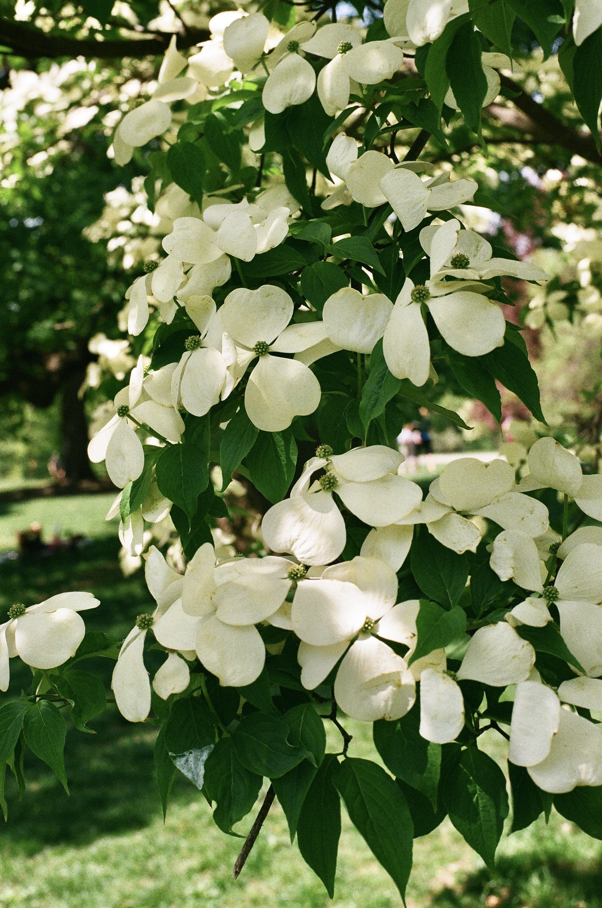

Flowering Dogwood

Flowering dogwood trees are my absolute favorites. I love their broad, flat, white flowers in late Spring!
Here are some fun facts about flowering dogwoods in NYC:
- There are 3,211 recorded flowering dogwood trees in NYC.
- Almost 40 species of bird are known to eat the fruit of flowering dogwood trees.
- The wood of flowering dogwoods is very hard and is used to create a variety of functional goods.
Sources:
Arbor Day Foundation. “White Dogwood.” Accessed October 26, 2025. https://shop.arborday.org/treeguide/280.
NYC Parks. “Flowering Dogwood Trees in NYC.” Accessed October 26, 2025. https://tree-map.nycgovparks.org/tree-map/species/21528.